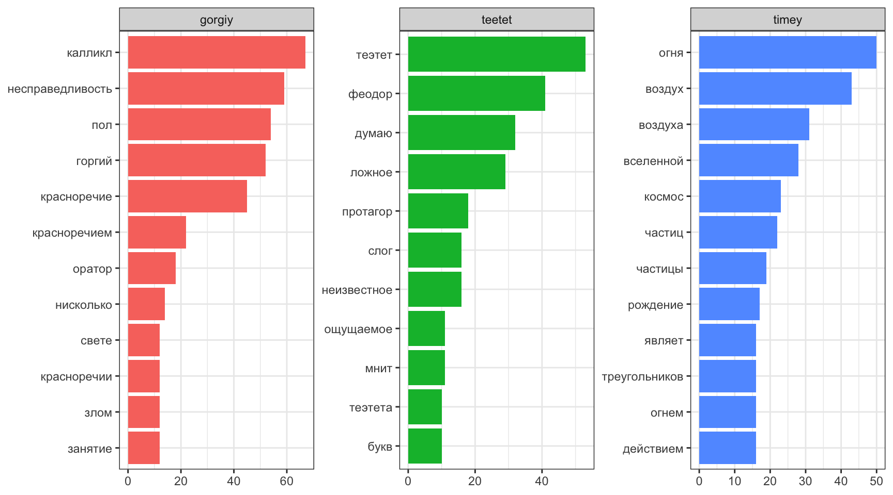

R version 4.3.3 (2024-02-29)Инструменты для анализа текста в R
летняя школа “Душа и процессор”
Аннотация
Язык программирования R дает исследователю полный набор инструментов для анализа текста. На занятии мы познакомимся с некоторыми из них, такими как анализ частотности, векторизация и кластеризация. Кроме того, обсудим, какие научные задачи могут решаться при помощи этих методов в историко-философских и историко-культурных исследованиях. Опыт программирования не требуется.
Введение
Введение в R
Установка R и RStudio
Мы будем использовать R (R Core Team 2023), так что для занятий понадобятся:
- R
- на Windows
- на Mac
- на Linux, также можно установить из командной строки:
sudo apt-get install r-cran-base- RStudio — IDE для R (можно скачать здесь)
Часто можно увидеть или услышать, что R — язык программирования для “статистической обработки данных”. Изначально это, конечно, было правдой, но уже давно R — это полноценный язык программирования, который при помощи своих пакетов позволяет решать огромный спектр задач. Мы будем использовать следующую версию R:
Некоторые люди не любят устанавливать лишние программы себе на компьютер, несколько вариантов есть и для них:
- RStudio cloud — полная функциональность RStudio с некоторыми ограничениями;
- webR REPL — ограниченная версия компилятора R, которая работает в вашем браузере и не требует никаких установок на компьютер
- Jupyter ноутбуки;
- Google Colab (нужно в настройках переключить ядро);
- VS Code — другое IDE, которое также позволяет работать с R;
- в принципе, в IDE нет нужды, можно работать из терминала, после установки, нужно всего лишь набрать
R.
Знакомство с RStudio
RStudio — основной IDE для R. После установки R и RStudio можно открыть RStudio и перед вами предстанет что-то похожее на изображение ниже:
 После нажатия на двойное окошко чуть левее надписи Environment откроется окно скрипта.
После нажатия на двойное окошко чуть левее надписи Environment откроется окно скрипта.

Все следующие команды можно
- вводить в окне консоли, и тогда для исполнения следует нажимать клавишу
Enter. - вводить в окне скрипта, и тогда для исполнения следует нажимать клавиши
Ctrl/Cmd + Enterили на команду Run на панели окна скрипта. Все, что введено в окне скрипта можно редактировать как в любом текстовом редакторе, в том числе сохранятьCtrl/Cmd + S.
R как калькулятор
Давайте начнем с самого простого и попробуем использовать R как простой калькулятор. +, -, *, /, ^ (степень), () и т. д.
Код
40+2[1] 42Код
3-2[1] 1Код
5*6[1] 30Код
99/9[1] 11Код
2+4*2[1] 10Код
(2+4)*2[1] 12Код
2^3[1] 8Создание переменных
Код
x <- "гнев, богиня, воспой"
y <- sqrt(2)Пайпы
Работа с пакетами
Код
library(tidyverse)── Attaching core tidyverse packages ──────────────────────── tidyverse 2.0.0 ──
✔ dplyr 1.1.4 ✔ readr 2.1.5
✔ forcats 1.0.0 ✔ stringr 1.5.1
✔ ggplot2 3.5.0 ✔ tibble 3.2.1
✔ lubridate 1.9.3 ✔ tidyr 1.3.1
✔ purrr 1.0.2
── Conflicts ────────────────────────────────────────── tidyverse_conflicts() ──
✖ dplyr::filter() masks stats::filter()
✖ dplyr::lag() masks stats::lag()
ℹ Use the conflicted package (<http://conflicted.r-lib.org/>) to force all conflicts to become errorsЧтение текстовых файлов
В пакете readr (входит в tidyverse) для чтения текста есть функция read_lines(). В качестве первой переменной может выступать путь к файлу на компьютере или интернет ссылка:
Код
alices_adventures_in_wonderland <- read_lines("https://raw.githubusercontent.com/agricolamz/daR4hs/main/data/w5_alices_adventures_in_wonderland.txt")
head(alices_adventures_in_wonderland, 20) [1] "The Project Gutenberg eBook of Alice's Adventures in Wonderland"
[2] " "
[3] "This ebook is for the use of anyone anywhere in the United States and"
[4] "most other parts of the world at no cost and with almost no restrictions"
[5] "whatsoever. You may copy it, give it away or re-use it under the terms"
[6] "of the Project Gutenberg License included with this ebook or online"
[7] "at www.gutenberg.org. If you are not located in the United States,"
[8] "you will have to check the laws of the country where you are located"
[9] "before using this eBook."
[10] ""
[11] "Title: Alice's Adventures in Wonderland"
[12] ""
[13] ""
[14] "Author: Lewis Carroll"
[15] ""
[16] "Release date: June 27, 2008 [eBook #11]"
[17] " Most recently updated: March 30, 2021"
[18] ""
[19] "Language: English"
[20] "" В большинстве случаев, тексты получится считать, однако иногда при работе со старыми архивами могут возникнуть проблемы с кодировками, например, все тексты в старейшей интернет-библиотеке на русском языке — библиотеке Максима Машкова (lib.ru) — записаны в KOI8-R:
Код
read_lines("https://raw.githubusercontent.com/agricolamz/daR4hs/main/data/w5_the_captains_daughter_koi8r.txt",
n_max = 15) [1] " \xe1\xcc\xc5\xcb\xd3\xc1\xce\xc4\xd2 \xf3\xc5\xd2\xc7\xc5\xc5\xd7\xc9\xde \xf0\xd5\xdb\xcb\xc9\xce. \xeb\xc1\xd0\xc9\xd4\xc1\xce\xd3\xcb\xc1\xd1 \xc4\xcf\xde\xcb\xc1"
[2] ""
[3] " ---------------------------------------------------------------"
[4] " OCR: \xef\xcc\xc5\xc7 \xeb\xcf\xcc\xc5\xd3\xce\xc9\xcb\xcf\xd7"
[5] " Origin: http://www.magister.msk.ru/library/pushkin/pushkin.htm ? http://www.magister.msk.ru/library/pushkin/pushkin.htm"
[6] " ---------------------------------------------------------------"
[7] ""
[8] " \xe2\xc5\xd2\xc5\xc7\xc9 \xde\xc5\xd3\xd4\xd8 \xd3\xcd\xcf\xcc\xcf\xc4\xd5."
[9] " \xf0\xcf\xd3\xcc\xcf\xd7\xc9\xc3\xc1"
[10] ""
[11] ""
[12] ""
[13] " \xe7\xec\xe1\xf7\xe1 I. \xf3\xe5\xf2\xf6\xe1\xee\xf4 \xe7\xf7\xe1\xf2\xe4\xe9\xe9."
[14] ""
[15] "" В функциях пакета readr (т. е. не только read_lines(), но и в функциях read_csv(), read_tsv() и т. п.) есть аргумент locale, который позволяет эксплицитно указать кодировку, а при считывании происходит процесс конвертации в стандартный для многих операционных систем UTF-8. Для текстов на русском языке важны следующие кодировки
KOI8-R, а для украинского языка —KOI8-U;CP1251(также известная под названиемWindows-1251) покрывает и другие кириллические письменности такие как украинский, белорусский, болгарский, сербский, македонский и другие.
Код
read_lines("https://raw.githubusercontent.com/agricolamz/daR4hs/main/data/w5_the_captains_daughter_koi8r.txt",
locale = locale(encoding = "KOI8-R"),
n_max = 15) [1] " Александр Сергеевич Пушкин. Капитанская дочка"
[2] ""
[3] " ---------------------------------------------------------------"
[4] " OCR: Олег Колесников"
[5] " Origin: http://www.magister.msk.ru/library/pushkin/pushkin.htm ? http://www.magister.msk.ru/library/pushkin/pushkin.htm"
[6] " ---------------------------------------------------------------"
[7] ""
[8] " Береги честь смолоду."
[9] " Пословица"
[10] ""
[11] ""
[12] ""
[13] " ГЛАВА I. СЕРЖАНТ ГВАРДИИ."
[14] ""
[15] "" Код
read_lines("https://raw.githubusercontent.com/agricolamz/daR4hs/main/data/w5_the_captains_daughter_cp1251.txt",
locale = locale(encoding = "CP1251"),
n_max = 15) [1] " Александр Сергеевич Пушкин. Капитанская дочка"
[2] ""
[3] " ---------------------------------------------------------------"
[4] " OCR: Олег Колесников"
[5] " Origin: http://www.magister.msk.ru/library/pushkin/pushkin.htm ? http://www.magister.msk.ru/library/pushkin/pushkin.htm"
[6] " ---------------------------------------------------------------"
[7] ""
[8] " Береги честь смолоду."
[9] " Пословица"
[10] ""
[11] ""
[12] ""
[13] " ГЛАВА I. СЕРЖАНТ ГВАРДИИ."
[14] ""
[15] "" Для просмотра и изменения кодировки внутри R следует использовать функцию Encoding():
Код
x <- "fa\xE7ile"
x[1] "fa\xe7ile"Код
Encoding(x)[1] "unknown"Теперь можем использовать функцию присваивания:
Код
Encoding(x) <- "latin1"
x[1] "façile"Код
Encoding(x)[1] "latin1"Если необходимо преобразовать из одной кодировки в другую, следует использовать функцию iconv():
Код
x <- iconv(x, "latin1", "UTF-8")
Encoding(x)[1] "UTF-8"Код
x[1] "façile"Работа с корпусом текстов
tidy-формат
Считываем наш корпус
Чтобы прочитать корпус текстов, укажите путь к ним из рабочей директории. Узнать, какая директория у вас рабочая, можно так:
Код
getwd()Изменить рабочую директорию можно из панели инструментов (вкладка Session, Set Working Directory) или при помощи функции setwd(), указав в качестве аргумента путь к рабочей директории на вашем компьютере (в кавычках, так как это символьный вектор).
Загрузите в вашу рабочую директорию файлы с корпусом текстов Платона. Их можно найти по ссылке.
Папка data содержит две вложенные: plato_w c переводами Платона и plato_l с лемматизированными текстами. Нам понадобятся обе, поместите data со всем содержимым в рабочую директорию.
Узнаем, какие файлы лежат в папке plato_l:
Код
filenames <- list.files("./data/plato_l", full.names = TRUE)
head(filenames) [1] "./data/plato_l/alkiviad_i.txt"
[2] "./data/plato_l/alkiviad_ii.txt"
[3] "./data/plato_l/apologiya_sokrata.txt"
[4] "./data/plato_l/evtidem.txt"
[5] "./data/plato_l/evtifron.txt"
[6] "./data/plato_l/feag.txt" Код
length(filenames)[1] 51Объект filenames – это символьный вектор, в котором 51 элемент. В нем хранятся пути до файлов с диалогами. Функция head() выводит только первые шесть элементов
Теперь наша задача – прочитать их все в R, чтобы можно было посчитать частотности. Для этого нужен цикл, который продется по всем файлам и соберет оттуда текст.
Код
corpus <- map(filenames, read_lines)Теперь у вас в окружении появился список corpus, в котором 51 элемент, по числу файлов. Достать любой элемент из списка и посмотреть на него можно по индексу. Текст большой, поэтому снова выведем только начало.
Код
head(corpus[[1]], 29) [1] "сын" "Клиния" "," "я" "полагать"
[6] "," "ты" "дивиться" "то" ","
[11] "что" "я" "," "стать" "первый"
[16] "твой" "поклонник" "," "продолжать" "оставаться"
[21] "он" "и" "теперь" "," "когда"
[26] "другой" "от" "ты" "отвернуться"Каждому элементу списка можно присвоить имя:
Код
cnames <- list.files("./data/plato_l", full.names = FALSE) |>
str_remove("\\.txt")
names(corpus) <- cnamesНажмите на объект в окружении, чтобы понять, что изменилось.
Анализ частотности n-gram
В нашем корпусе текст уже разделен на отдельные слова (и знаки препинания), потому что предварительно мы его лемматизировали. Это значит, что все слова были автоматически приведены к начальной форме (лемме).
Прежде чем их считать, удобно превратить объект corpus из списка в таблицу (tibble), чтобы можно было работать с использованием tidyverse.
Код
corpus_tbl <- corpus |>
stack() |>
as_tibble() |>
transmute(text = ind, word = values)
head(corpus_tbl)# A tibble: 6 × 2
text word
<fct> <chr>
1 alkiviad_i сын
2 alkiviad_i Клиния
3 alkiviad_i ,
4 alkiviad_i я
5 alkiviad_i полагать
6 alkiviad_i , Код
nrow(corpus_tbl)[1] 740767У нас получилась очень длинная таблица, в которой хранятся все слова и знаки препинания для диалогов. Знаки препинания нам не интересны, поэтому сразу от них избавимся.
Код
corpus_tbl <- corpus_tbl |>
filter(!str_detect(word, "[[:punct:]<>]")) Узнаем, сколько слов в каждом тексте:
Код
total <- corpus_tbl |>
group_by(text) |>
summarise(total = n()) |>
arrange(-total)
total# A tibble: 51 × 2
text total
<fct> <int>
1 gorgiy 28588
2 timey 26929
3 teetet 25213
4 fedon 23178
5 kratil 20218
6 fileb 18856
7 protagor 18337
8 fedr 18196
9 pir 18116
10 politik 18091
# ℹ 41 more rowsНам осталось посчитать частотность для каждого слова и разделить на общее число слов. Таким образом мы узнаем относительную частотность (tf) для каждого слова, и сможем отобрать наиболее частотные или, наоборот, редкие слова. Обратите внимание, что таблица corpus_counts уже не такая длинная, как corpus_tbl.
Код
corpus_counts <- corpus_tbl |>
count(text, word) |>
arrange(-n)
head(corpus_counts)# A tibble: 6 × 3
text word n
<fct> <chr> <int>
1 gorgiy и 1520
2 timey и 1420
3 fedon и 1241
4 teetet и 1197
5 pir и 973
6 protagor и 953Код
nrow(corpus_counts)[1] 97042Ожидаемо среди самых частотных единиц оказались служебные части речи.
Соединим две таблицы.
Код
corpus_tf <- corpus_counts |>
left_join(total)Joining with `by = join_by(text)`Код
corpus_tf# A tibble: 97,042 × 4
text word n total
<fct> <chr> <int> <int>
1 gorgiy и 1520 28588
2 timey и 1420 26929
3 fedon и 1241 23178
4 teetet и 1197 25213
5 pir и 973 18116
6 protagor и 953 18337
7 kratil и 913 20218
8 fileb и 872 18856
9 fedr и 850 18196
10 politik и 839 18091
# ℹ 97,032 more rowsТеперь добавим новый столбец:
Код
corpus_tf <- corpus_tf |>
mutate(tf = n / total) |>
arrange(-tf)
corpus_tf# A tibble: 97,042 × 5
text word n total tf
<fct> <chr> <int> <int> <dbl>
1 gosudarstvo_iii и 593 10631 0.0558
2 kritiy и 284 5113 0.0555
3 ion и 209 3814 0.0548
4 gosudarstvo_ii и 496 9203 0.0539
5 pir и 973 18116 0.0537
6 fedon и 1241 23178 0.0535
7 meneksen и 288 5388 0.0535
8 gorgiy и 1520 28588 0.0532
9 timey и 1420 26929 0.0527
10 gosudarstvo_viii и 467 8896 0.0525
# ℹ 97,032 more rowsДля большинства диалогов список наиболее частотных слов будет выглядеть так:
Код
library(tidytext)
corpus_tf |>
filter(text %in% c("timey", "teetet", "gorgiy")) |>
group_by(text) |>
slice_max(order_by = tf, n = 10) |>
ungroup() |>
ggplot(aes(reorder_within(word, tf, text),
tf, fill = text)) +
geom_bar(stat="identity", show.legend = FALSE) +
facet_wrap(~ text, scales = "free") +
coord_flip() +
scale_x_reordered() +
xlab(NULL)
В некоторых случаях (например, для кластеризации), такие служебные слова нужны, потому что они относительно независимы от тематики. В других случаях (например, для тематического моделирования) от них лучше избавиться. Это можно сделать двумя способами: либо механически удалить стоп-слова, либо отобрать лексику на основе tf_idf.
Стопслова
Пакет stopwords
Выше мы упомянули, что в пакет tidytext встроен список английских стопслов. Стопслова для других язков можно раздобыть списки для других языков, используя пакет stopwords. Вместо имени языка, функция принимает ISO код языыка:
Код
library(stopwords)
stopwords("ru") [1] "и" "в" "во" "не" "что" "он" "на"
[8] "я" "с" "со" "как" "а" "то" "все"
[15] "она" "так" "его" "но" "да" "ты" "к"
[22] "у" "же" "вы" "за" "бы" "по" "только"
[29] "ее" "мне" "было" "вот" "от" "меня" "еще"
[36] "нет" "о" "из" "ему" "теперь" "когда" "даже"
[43] "ну" "вдруг" "ли" "если" "уже" "или" "ни"
[50] "быть" "был" "него" "до" "вас" "нибудь" "опять"
[57] "уж" "вам" "сказал" "ведь" "там" "потом" "себя"
[64] "ничего" "ей" "может" "они" "тут" "где" "есть"
[71] "надо" "ней" "для" "мы" "тебя" "их" "чем"
[78] "была" "сам" "чтоб" "без" "будто" "человек" "чего"
[85] "раз" "тоже" "себе" "под" "жизнь" "будет" "ж"
[92] "тогда" "кто" "этот" "говорил" "того" "потому" "этого"
[99] "какой" "совсем" "ним" "здесь" "этом" "один" "почти"
[106] "мой" "тем" "чтобы" "нее" "кажется" "сейчас" "были"
[113] "куда" "зачем" "сказать" "всех" "никогда" "сегодня" "можно"
[120] "при" "наконец" "два" "об" "другой" "хоть" "после"
[127] "над" "больше" "тот" "через" "эти" "нас" "про"
[134] "всего" "них" "какая" "много" "разве" "сказала" "три"
[141] "эту" "моя" "впрочем" "хорошо" "свою" "этой" "перед"
[148] "иногда" "лучше" "чуть" "том" "нельзя" "такой" "им"
[155] "более" "всегда" "конечно" "всю" "между" Пакет предоставляет несколько источников списков:
Код
stopwords_getsources()[1] "snowball" "stopwords-iso" "misc" "smart"
[5] "marimo" "ancient" "nltk" "perseus" Давайте посмотрим какие языки сейчас доступны:
Код
map(stopwords_getsources(), stopwords_getlanguages)[[1]]
[1] "da" "de" "en" "es" "fi" "fr" "hu" "ir" "it" "nl" "no" "pt" "ro" "ru" "sv"
[[2]]
[1] "af" "ar" "hy" "eu" "bn" "br" "bg" "ca" "zh" "hr" "cs" "da" "nl" "en" "eo"
[16] "et" "fi" "fr" "gl" "de" "el" "ha" "he" "hi" "hu" "id" "ga" "it" "ja" "ko"
[31] "ku" "la" "lt" "lv" "ms" "mr" "no" "fa" "pl" "pt" "ro" "ru" "sk" "sl" "so"
[46] "st" "es" "sw" "sv" "th" "tl" "tr" "uk" "ur" "vi" "yo" "zu"
[[3]]
[1] "ar" "ca" "el" "gu" "zh"
[[4]]
[1] "en"
[[5]]
[1] "en" "de" "ru" "ar" "he" "zh_tw" "zh_cn" "ko" "ja"
[[6]]
[1] "grc" "la"
[[7]]
[1] "ar" "az" "da" "nl" "en" "fi" "fr" "de" "el" "hu" "id" "it" "kk" "ne" "no"
[16] "pt" "ro" "ru" "sl" "es" "sv" "tg" "tr"
[[8]]
[1] "grc" "la" Мы видим, что есть несколько источников для русского языка:
Код
length(stopwords("ru", source = "snowball"))[1] 159Код
length(stopwords("ru", source = "stopwords-iso"))[1] 559Код
length(stopwords("ru", source = "marimo"))[1] 333Код
length(stopwords("ru", source = "nltk"))[1] 151Мера tf-idf
Анализ коллокаций
Кластеризация авторов на основе частотности языковых единиц
Векторизация
R Core Team. 2023. R: A Language and Environment for Statistical Computing. Vienna, Austria: R Foundation for Statistical Computing. https://www.R-project.org/.